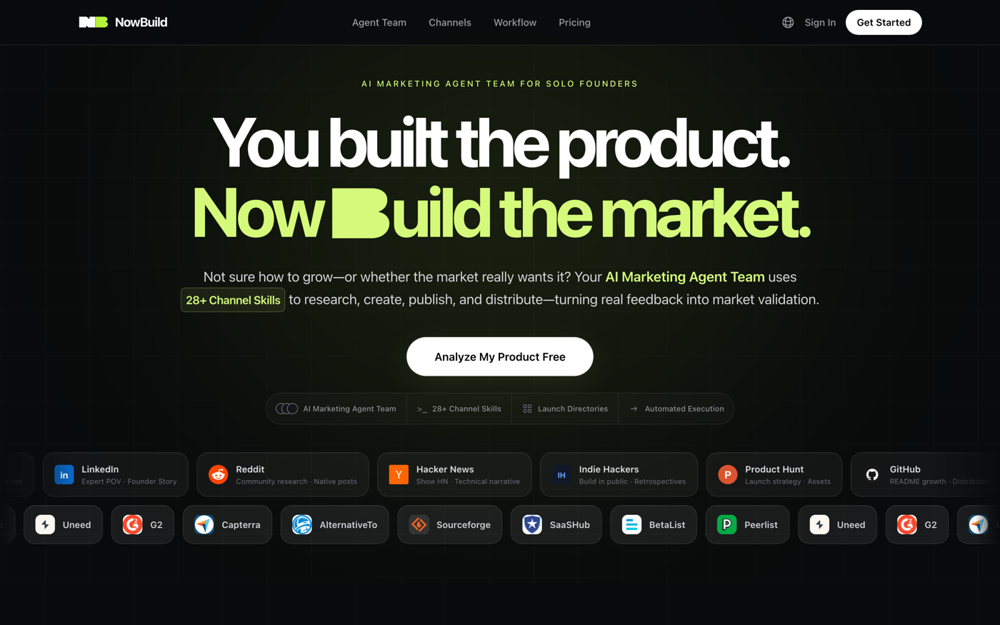
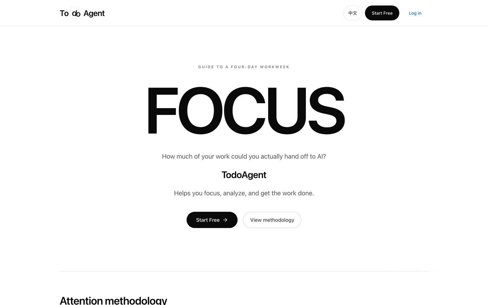
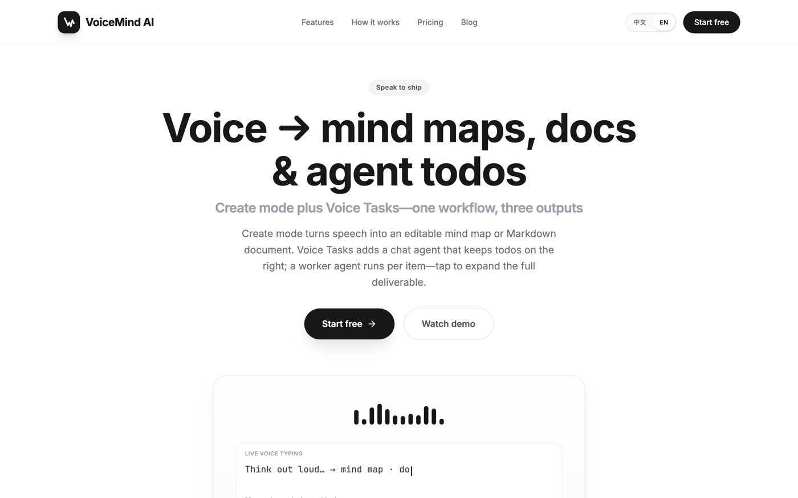
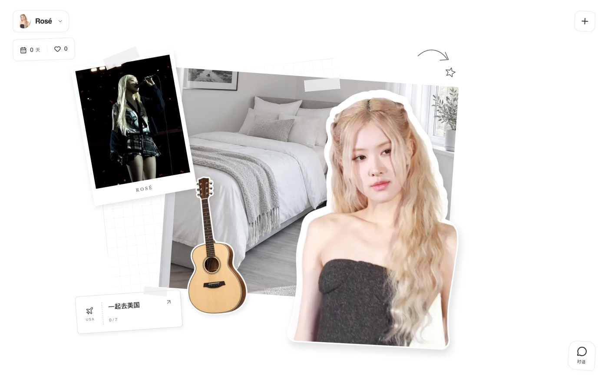

AI Builder · Shenzhen
你说出口， 它就发生。 Say it, and it happens.
我是钟镇杰，一个相信「言出法随」的 AI 产品经理。
白天我在剪映做图片、成片与剪辑 Agent；其余时间，我做 NowBuild、todoAgent 和 VoiceMind——始终在打磨人与 Agent 之间的那层接触面。
scroll
我是钟镇杰，一个相信「言出法随」的 AI 产品经理。
白天我在剪映做图片、成片与剪辑 Agent；其余时间，我做 NowBuild、todoAgent 和 VoiceMind——始终在打磨人与 Agent 之间的那层接触面。
我相信最好的界面，不是再多一排按钮，而是言出法随——
你只管说出意图，剩下的交给一个听得懂、会动手的 Agent。
对话负责下发与调度，界面负责把你所想的东西，好好呈现出来。
That's the interface I want to build.
A manifesto, not a resume
我是 ENFP，想法比时间多，享受 0 到 1 本身。写故事、做电影、搭产品，对我来说是同一种冲动。
这两年我一直在同一件事上较劲：人和 Agent 到底该怎么接触。我先后做了营销 agent team、待办清单里的 agent、实时语音里的思维梳理器、以克隆声音为入口的陪伴产品。它们把我推向同一个答案——对话与任务的下发、执行必须分离：人只负责说清楚想要什么，agent 负责拆解、调度、执行，再把结果交还给一个人一眼能看懂的界面。
我不迷信大厂或独立开发者的标签。我能用 vibe coding 独立做出完整的产品，几乎具备 0–1 所需的全部研发能力；也认真啃过增长，知道那是一门比研发更重、更慢的功夫。我做了不少产品，很多还没赚钱，但我享受这个过程——我真正在意的，是为一部分人，做出他们离不开的东西。
我也是个真用户：我会先用自己做的产品过日子，再决定它下一步该长成什么样。
来自我的即刻。它们不是结论，是我在下注的方向。
我赌意图到结果之间的距离会趋近于零。当说出口就发生，产品设计的重心会从「功能入口」转向「意图理解与信任」。
我相信一个能被反复消费的声音 IP，比任何功能都更像入口——陪伴、学习、同传、导游，都会从这里长出来。
我想要的不是它记住聊天记录，而是它记住「我是谁」：偏好变成权重，智能才真正属于我。
这套 Router + Worker 的 super-agent 架构，我早就在 NowBuild 和 todoAgent 里做过一版。难道我是天才？我是真用户。
它们都已经上线，可以点进去亲自用一用。

我做了一个会管项目的 agent：替我调度几十个渠道的 sub-agent，每天研究、创作、发布，每周自己复盘数据、调整策略。我用一张每日 todo，同时管住它的执行进程和我的预期。

一个帮我专注、分析、把活干完的 agent。我把它直接放进 todolist：在工作流里顺手下发任务，它天然继承已有上下文，不用每次从头解释一遍背景。

一个实时语音交互产品：我一边说，它一边听、一边回应，把思路实时铺成思维导图和文档，并用一个 worker agent 逐条执行语音里派下去的任务。说完，结构已成。

我把克隆声音当作人和 AI 的接触面，做语言学习、同声传译、旅游导游、户外陪伴。第一个跑通的，是「和 Rosé 聊日常，走进美国旅行英语冒险」。
我还开源过两套面向海外的全栈 SaaS 脚手架——认证、支付、数据库、SEO、多语言都预置好，想做小生意的人可以少走几周弯路。需要的话，当面找我要。
白天的我在剪映做 AI 产品经理，一个人在几条线之间来回推进。
我是图片 Web 端的核心 PM，把一款「AI Agent + 商业图片设计」产品从一张白纸带了起来：定市场切口、整合设计 Agent、模板库和空白画板、冷启动引流，再一版一版打磨它的上下文记忆、生成速度和画板体验。一年里，活跃规模增长约三成、站稳百万 DAU 量级，并超额完成目标，新用户的次留也一节一节往上走。
我推动图片 Agent 接连接入新一代生图模型，让整体采纳率提升到接近七成；更重要的是，我自己制定了一套图片模型评测标准和方法——后来在剪映、醒图几条业务线都被引用，成为模型接入和流量分配的共同依据。
我在多轨封面编辑器里做出了「智能设计」，让用户剪视频时顺手就能拿到一张好封面；又搭起热点内容的 AI 复刻链路，把热点模板的生产从纯手工变成半自动化，产能翻了近三倍，热点内容在导出中的占比也被拉到一个我此前不敢想的位置。
面对一个复杂的剪辑 Agent，我把整个框架拆成一个个环节，定义了承接率、满意度这两个总指标，以及素材理解、工具检索等专项能力的评测方法；再和工程、QA 一起，把真值对比、无真值机评、草稿自动填充、云真机多轮对话做成自动化链路。从此每次策略迭代，都能看到自己到底变好还是变差。
字幕这条线，我在识别效果几乎无损的前提下把 ASR 推上本地化，覆盖四成以上的识别流量，把这块成本结构性地降了一个量级；同时定下下一代小模型的演进路线，并用批量改词补上长尾场景的体验。
我把数字人的内容方向定在「真实感」，引入更有情绪、视角更自然的形象，推动生成模型升级并重走新手链路。最终形象转化率提升约五成，采纳、活跃和付费都跟着一起长。
我在这里做图片、成片与剪辑 Agent，负责图片 Web 端的 0→1。
我带海外 C 端 AI：互动小说与漫画、角色扮演、情感陪伴。从市场切入到 MVP 冷启动，再到定价、GTM 和增长，一个人串起整条线。
我做海外角色扮演和情感陪伴产品：设计 Multi-Agent 的游戏化交互，接入声音克隆，用 RAG 做长期记忆，还认真折腾过 AI 硬件。
我在大模型落地、影楼行业数字化（种子轮）、微信搜一搜算法评测和企业低代码平台各待过一段，每一段都把我往 AI 这边推了一步。
市场、商科和代码交叉的起点。